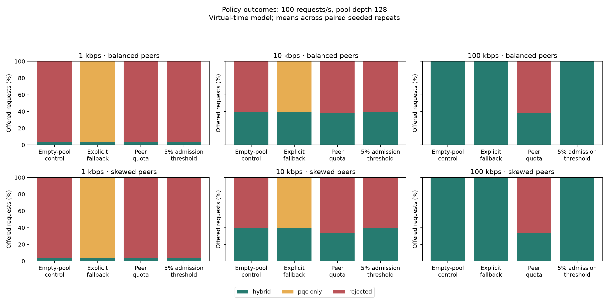

Recorded pool and policy experiment. Every number below is derived from the adjacent CSV files.
Interpretation: fallback preserves modeled completion by accepting PQC_ONLY. Strict quota and admission policies trade availability for resource control. A quota can leave QKD capacity unused when demand is concentrated on one peer. A 5% check is a pre-request threshold, not an atomic guarantee that 5% remains after consumption.
Timing: guard times are measured local Python execution, including timer overhead. They are not handshake or network latencies. Outcome mixtures differ between policies. Use policy_events.csv to inspect each outcome; do not call the difference a cryptographic speedup.
Fairness: Jain index compares per-peer hybrid success fractions, averaged across repeats here. 1 means equal fractions; blank means no hybrid service. Equal absolute throughput under unequal demand can lower this index.
Scope: starts empty; warmup excluded, with state retained. Seeded peer assignment; four peers; 70%/10%/10%/10% expected demand in skewed workloads. Immediate key retrieval. No measured KEM, network, queuing or transport costs. Model completion assumes all allowed PQC handshakes would succeed.
Exact configuration, source hashes and host · Raw requests · Per-repeat summaries · Peer outcomes · Aggregate table

| Supply kbps | Requests/s | Depth | Workload | Policy | Hybrid % | PQC % | Rejected % | Mean keys | Mean Jain | Guard median µs | Guard p95 µs |
|---|---|---|---|---|---|---|---|---|---|---|---|
| 1 | 1 | 128 | balanced | admission_control | 100.00 | 0.00 | 0.00 | 100.58 | 1.000 | 1.042 | 1.458 |
| 1 | 1 | 128 | balanced | explicit_downgrade | 100.00 | 0.00 | 0.00 | 100.03 | 1.000 | 0.500 | 0.669 |
| 1 | 1 | 128 | balanced | per_peer_quota | 100.00 | 0.00 | 0.00 | 100.03 | 1.000 | 0.792 | 1.044 |
| 1 | 1 | 128 | balanced | reject_on_empty | 100.00 | 0.00 | 0.00 | 100.03 | 1.000 | 0.500 | 0.708 |
| 1 | 1 | 128 | skewed | admission_control | 100.00 | 0.00 | 0.00 | 100.58 | 1.000 | 1.083 | 1.252 |
| 1 | 1 | 128 | skewed | explicit_downgrade | 100.00 | 0.00 | 0.00 | 100.03 | 1.000 | 0.500 | 0.666 |
| 1 | 1 | 128 | skewed | per_peer_quota | 100.00 | 0.00 | 0.00 | 100.03 | 1.000 | 0.791 | 1.084 |
| 1 | 1 | 128 | skewed | reject_on_empty | 100.00 | 0.00 | 0.00 | 100.03 | 1.000 | 0.541 | 0.708 |
| 1 | 10 | 128 | balanced | admission_control | 39.00 | 0.00 | 61.00 | 6.00 | 0.993 | 1.125 | 1.458 |
| 1 | 10 | 128 | balanced | explicit_downgrade | 39.00 | 61.00 | 0.00 | 0.00 | 0.993 | 0.541 | 0.667 |
| 1 | 10 | 128 | balanced | per_peer_quota | 39.00 | 0.00 | 61.00 | 0.00 | 0.993 | 0.834 | 1.042 |
| 1 | 10 | 128 | balanced | reject_on_empty | 39.00 | 0.00 | 61.00 | 0.00 | 0.993 | 0.500 | 0.708 |
| 1 | 10 | 128 | skewed | admission_control | 39.00 | 0.00 | 61.00 | 6.00 | 0.971 | 1.167 | 1.375 |
| 1 | 10 | 128 | skewed | explicit_downgrade | 39.00 | 61.00 | 0.00 | 0.00 | 0.971 | 0.541 | 0.666 |
| 1 | 10 | 128 | skewed | per_peer_quota | 39.00 | 0.00 | 61.00 | 0.00 | 0.971 | 0.916 | 1.042 |
| 1 | 10 | 128 | skewed | reject_on_empty | 39.00 | 0.00 | 61.00 | 0.00 | 0.971 | 0.541 | 0.666 |
| 1 | 100 | 128 | balanced | admission_control | 3.90 | 0.00 | 96.10 | 6.00 | 0.986 | 1.208 | 1.459 |
| 1 | 100 | 128 | balanced | explicit_downgrade | 3.90 | 96.10 | 0.00 | 0.00 | 0.986 | 0.542 | 0.667 |
| 1 | 100 | 128 | balanced | per_peer_quota | 3.90 | 0.00 | 96.10 | 0.06 | 0.983 | 1.125 | 1.417 |
| 1 | 100 | 128 | balanced | reject_on_empty | 3.90 | 0.00 | 96.10 | 0.00 | 0.986 | 0.542 | 0.709 |
| 1 | 100 | 128 | skewed | admission_control | 3.90 | 0.00 | 96.10 | 6.00 | 0.976 | 1.209 | 1.500 |
| 1 | 100 | 128 | skewed | explicit_downgrade | 3.90 | 96.10 | 0.00 | 0.00 | 0.976 | 0.542 | 0.667 |
| 1 | 100 | 128 | skewed | per_peer_quota | 3.91 | 0.00 | 96.09 | 0.10 | 0.789 | 1.125 | 1.375 |
| 1 | 100 | 128 | skewed | reject_on_empty | 3.90 | 0.00 | 96.10 | 0.00 | 0.976 | 0.541 | 0.708 |
| 1 | 20 | 128 | balanced | admission_control | 19.50 | 0.00 | 80.50 | 6.00 | 0.993 | 1.167 | 1.375 |
| 1 | 20 | 128 | balanced | explicit_downgrade | 19.50 | 80.50 | 0.00 | 0.00 | 0.993 | 0.541 | 0.625 |
| 1 | 20 | 128 | balanced | per_peer_quota | 19.50 | 0.00 | 80.50 | 0.00 | 0.994 | 0.917 | 1.125 |
| 1 | 20 | 128 | balanced | reject_on_empty | 19.50 | 0.00 | 80.50 | 0.00 | 0.993 | 0.542 | 0.625 |
| 1 | 20 | 128 | skewed | admission_control | 19.50 | 0.00 | 80.50 | 6.00 | 0.976 | 1.167 | 1.375 |
| 1 | 20 | 128 | skewed | explicit_downgrade | 19.50 | 80.50 | 0.00 | 0.00 | 0.976 | 0.541 | 0.667 |
| 1 | 20 | 128 | skewed | per_peer_quota | 19.50 | 0.00 | 80.50 | 0.06 | 0.957 | 1.000 | 1.292 |
| 1 | 20 | 128 | skewed | reject_on_empty | 19.50 | 0.00 | 80.50 | 0.00 | 0.976 | 0.541 | 0.667 |
| 1 | 5 | 128 | balanced | admission_control | 78.00 | 0.00 | 22.00 | 6.00 | 0.998 | 1.083 | 1.375 |
| 1 | 5 | 128 | balanced | explicit_downgrade | 78.00 | 22.00 | 0.00 | 0.00 | 0.998 | 0.541 | 0.667 |
| 1 | 5 | 128 | balanced | per_peer_quota | 78.00 | 0.00 | 22.00 | 0.00 | 0.998 | 0.833 | 1.125 |
| 1 | 5 | 128 | balanced | reject_on_empty | 78.00 | 0.00 | 22.00 | 0.00 | 0.998 | 0.542 | 0.708 |
| 1 | 5 | 128 | skewed | admission_control | 78.00 | 0.00 | 22.00 | 6.00 | 0.996 | 1.125 | 1.417 |
| 1 | 5 | 128 | skewed | explicit_downgrade | 78.00 | 22.00 | 0.00 | 0.00 | 0.996 | 0.541 | 0.709 |
| 1 | 5 | 128 | skewed | per_peer_quota | 78.00 | 0.00 | 22.00 | 0.00 | 0.996 | 0.875 | 1.083 |
| 1 | 5 | 128 | skewed | reject_on_empty | 78.00 | 0.00 | 22.00 | 0.00 | 0.996 | 0.542 | 0.667 |
| 1 | 50 | 128 | balanced | admission_control | 7.80 | 0.00 | 92.20 | 6.00 | 0.979 | 1.209 | 1.417 |
| 1 | 50 | 128 | balanced | explicit_downgrade | 7.80 | 92.20 | 0.00 | 0.00 | 0.979 | 0.542 | 0.667 |
| 1 | 50 | 128 | balanced | per_peer_quota | 7.81 | 0.00 | 92.19 | 0.03 | 0.991 | 1.041 | 1.292 |
| 1 | 50 | 128 | balanced | reject_on_empty | 7.80 | 0.00 | 92.20 | 0.00 | 0.979 | 0.542 | 0.667 |
| 1 | 50 | 128 | skewed | admission_control | 7.80 | 0.00 | 92.20 | 6.00 | 0.968 | 1.209 | 1.375 |
| 1 | 50 | 128 | skewed | explicit_downgrade | 7.80 | 92.20 | 0.00 | 0.00 | 0.968 | 0.541 | 0.625 |
| 1 | 50 | 128 | skewed | per_peer_quota | 7.83 | 0.00 | 92.17 | 0.10 | 0.831 | 1.083 | 1.292 |
| 1 | 50 | 128 | skewed | reject_on_empty | 7.80 | 0.00 | 92.20 | 0.00 | 0.968 | 0.541 | 0.667 |
| 10 | 1 | 128 | balanced | admission_control | 100.00 | 0.00 | 0.00 | 127.00 | 1.000 | 1.125 | 1.336 |
| 10 | 1 | 128 | balanced | explicit_downgrade | 100.00 | 0.00 | 0.00 | 127.00 | 1.000 | 0.542 | 0.666 |
| 10 | 1 | 128 | balanced | per_peer_quota | 100.00 | 0.00 | 0.00 | 127.00 | 1.000 | 0.791 | 0.875 |
| 10 | 1 | 128 | balanced | reject_on_empty | 100.00 | 0.00 | 0.00 | 127.00 | 1.000 | 0.500 | 0.584 |
| 10 | 1 | 128 | skewed | admission_control | 100.00 | 0.00 | 0.00 | 127.00 | 1.000 | 1.125 | 1.292 |
| 10 | 1 | 128 | skewed | explicit_downgrade | 100.00 | 0.00 | 0.00 | 127.00 | 1.000 | 0.542 | 0.625 |
| 10 | 1 | 128 | skewed | per_peer_quota | 100.00 | 0.00 | 0.00 | 127.00 | 1.000 | 0.792 | 0.919 |
| 10 | 1 | 128 | skewed | reject_on_empty | 100.00 | 0.00 | 0.00 | 127.00 | 1.000 | 0.541 | 0.625 |
| 10 | 10 | 128 | balanced | admission_control | 100.00 | 0.00 | 0.00 | 127.00 | 1.000 | 1.125 | 1.416 |
| 10 | 10 | 128 | balanced | explicit_downgrade | 100.00 | 0.00 | 0.00 | 127.00 | 1.000 | 0.541 | 0.627 |
| 10 | 10 | 128 | balanced | per_peer_quota | 100.00 | 0.00 | 0.00 | 127.00 | 1.000 | 0.875 | 1.083 |
| 10 | 10 | 128 | balanced | reject_on_empty | 100.00 | 0.00 | 0.00 | 127.00 | 1.000 | 0.542 | 0.667 |
| 10 | 10 | 128 | skewed | admission_control | 100.00 | 0.00 | 0.00 | 127.00 | 1.000 | 1.167 | 1.292 |
| 10 | 10 | 128 | skewed | explicit_downgrade | 100.00 | 0.00 | 0.00 | 127.00 | 1.000 | 0.542 | 0.625 |
| 10 | 10 | 128 | skewed | per_peer_quota | 100.00 | 0.00 | 0.00 | 127.00 | 1.000 | 0.917 | 1.083 |
| 10 | 10 | 128 | skewed | reject_on_empty | 100.00 | 0.00 | 0.00 | 127.00 | 1.000 | 0.542 | 0.666 |
| 10 | 100 | 128 | balanced | admission_control | 39.07 | 0.00 | 60.93 | 6.00 | 0.999 | 1.167 | 1.500 |
| 10 | 100 | 128 | balanced | explicit_downgrade | 39.07 | 60.93 | 0.00 | 0.00 | 0.999 | 0.542 | 0.709 |
| 10 | 100 | 128 | balanced | per_peer_quota | 38.18 | 0.00 | 61.82 | 47.15 | 0.999 | 1.125 | 1.417 |
| 10 | 100 | 128 | balanced | reject_on_empty | 39.07 | 0.00 | 60.93 | 0.00 | 0.999 | 0.542 | 0.708 |
| 10 | 100 | 128 | skewed | admission_control | 39.07 | 0.00 | 60.93 | 6.00 | 0.999 | 1.167 | 1.500 |
| 10 | 100 | 128 | skewed | explicit_downgrade | 39.07 | 60.93 | 0.00 | 0.00 | 0.999 | 0.542 | 0.708 |
| 10 | 100 | 128 | skewed | per_peer_quota | 33.76 | 0.00 | 66.24 | 119.72 | 0.834 | 1.125 | 1.417 |
| 10 | 100 | 128 | skewed | reject_on_empty | 39.07 | 0.00 | 60.93 | 0.00 | 0.999 | 0.542 | 0.709 |
| 10 | 20 | 128 | balanced | admission_control | 100.00 | 0.00 | 0.00 | 127.00 | 1.000 | 1.167 | 1.459 |
| 10 | 20 | 128 | balanced | explicit_downgrade | 100.00 | 0.00 | 0.00 | 127.00 | 1.000 | 0.542 | 0.666 |
| 10 | 20 | 128 | balanced | per_peer_quota | 99.50 | 0.00 | 0.50 | 127.00 | 1.000 | 0.958 | 1.125 |
| 10 | 20 | 128 | balanced | reject_on_empty | 100.00 | 0.00 | 0.00 | 127.00 | 1.000 | 0.541 | 0.667 |
| 10 | 20 | 128 | skewed | admission_control | 100.00 | 0.00 | 0.00 | 127.00 | 1.000 | 1.125 | 1.292 |
| 10 | 20 | 128 | skewed | explicit_downgrade | 100.00 | 0.00 | 0.00 | 127.00 | 1.000 | 0.542 | 0.625 |
| 10 | 20 | 128 | skewed | per_peer_quota | 77.03 | 0.00 | 22.97 | 127.23 | 0.977 | 0.959 | 1.292 |
| 10 | 20 | 128 | skewed | reject_on_empty | 100.00 | 0.00 | 0.00 | 127.00 | 1.000 | 0.542 | 0.666 |
| 10 | 5 | 128 | balanced | admission_control | 100.00 | 0.00 | 0.00 | 127.00 | 1.000 | 1.167 | 1.375 |
| 10 | 5 | 128 | balanced | explicit_downgrade | 100.00 | 0.00 | 0.00 | 127.00 | 1.000 | 0.583 | 0.711 |
| 10 | 5 | 128 | balanced | per_peer_quota | 100.00 | 0.00 | 0.00 | 127.00 | 1.000 | 0.875 | 1.125 |
| 10 | 5 | 128 | balanced | reject_on_empty | 100.00 | 0.00 | 0.00 | 127.00 | 1.000 | 0.583 | 0.709 |
| 10 | 5 | 128 | skewed | admission_control | 100.00 | 0.00 | 0.00 | 127.00 | 1.000 | 1.125 | 1.333 |
| 10 | 5 | 128 | skewed | explicit_downgrade | 100.00 | 0.00 | 0.00 | 127.00 | 1.000 | 0.500 | 0.750 |
| 10 | 5 | 128 | skewed | per_peer_quota | 100.00 | 0.00 | 0.00 | 127.00 | 1.000 | 0.875 | 1.125 |
| 10 | 5 | 128 | skewed | reject_on_empty | 100.00 | 0.00 | 0.00 | 127.00 | 1.000 | 0.541 | 0.667 |
| 10 | 50 | 128 | balanced | admission_control | 78.13 | 0.00 | 21.87 | 6.00 | 1.000 | 1.125 | 1.416 |
| 10 | 50 | 128 | balanced | explicit_downgrade | 78.13 | 21.87 | 0.00 | 0.00 | 1.000 | 0.542 | 0.708 |
| 10 | 50 | 128 | balanced | per_peer_quota | 70.12 | 0.00 | 29.88 | 112.80 | 0.999 | 1.000 | 1.375 |
| 10 | 50 | 128 | balanced | reject_on_empty | 78.13 | 0.00 | 21.87 | 0.00 | 1.000 | 0.541 | 0.708 |
| 10 | 50 | 128 | skewed | admission_control | 78.13 | 0.00 | 21.87 | 6.00 | 0.999 | 1.083 | 1.375 |
| 10 | 50 | 128 | skewed | explicit_downgrade | 78.13 | 21.87 | 0.00 | 0.00 | 0.999 | 0.583 | 0.750 |
| 10 | 50 | 128 | skewed | per_peer_quota | 49.32 | 0.00 | 50.68 | 127.39 | 0.876 | 1.083 | 1.375 |
| 10 | 50 | 128 | skewed | reject_on_empty | 78.13 | 0.00 | 21.87 | 0.00 | 0.999 | 0.542 | 0.667 |
| 100 | 1 | 128 | balanced | admission_control | 100.00 | 0.00 | 0.00 | 127.00 | 1.000 | 1.084 | 1.416 |
| 100 | 1 | 128 | balanced | explicit_downgrade | 100.00 | 0.00 | 0.00 | 127.00 | 1.000 | 0.542 | 0.666 |
| 100 | 1 | 128 | balanced | per_peer_quota | 100.00 | 0.00 | 0.00 | 127.00 | 1.000 | 0.792 | 1.042 |
| 100 | 1 | 128 | balanced | reject_on_empty | 100.00 | 0.00 | 0.00 | 127.00 | 1.000 | 0.500 | 0.627 |
| 100 | 1 | 128 | skewed | admission_control | 100.00 | 0.00 | 0.00 | 127.00 | 1.000 | 1.166 | 1.333 |
| 100 | 1 | 128 | skewed | explicit_downgrade | 100.00 | 0.00 | 0.00 | 127.00 | 1.000 | 0.542 | 0.667 |
| 100 | 1 | 128 | skewed | per_peer_quota | 100.00 | 0.00 | 0.00 | 127.00 | 1.000 | 0.833 | 1.083 |
| 100 | 1 | 128 | skewed | reject_on_empty | 100.00 | 0.00 | 0.00 | 127.00 | 1.000 | 0.542 | 0.708 |
| 100 | 10 | 128 | balanced | admission_control | 100.00 | 0.00 | 0.00 | 127.00 | 1.000 | 1.125 | 1.334 |
| 100 | 10 | 128 | balanced | explicit_downgrade | 100.00 | 0.00 | 0.00 | 127.00 | 1.000 | 0.542 | 0.709 |
| 100 | 10 | 128 | balanced | per_peer_quota | 100.00 | 0.00 | 0.00 | 127.00 | 1.000 | 0.916 | 1.083 |
| 100 | 10 | 128 | balanced | reject_on_empty | 100.00 | 0.00 | 0.00 | 127.00 | 1.000 | 0.542 | 0.667 |
| 100 | 10 | 128 | skewed | admission_control | 100.00 | 0.00 | 0.00 | 127.00 | 1.000 | 1.167 | 1.334 |
| 100 | 10 | 128 | skewed | explicit_downgrade | 100.00 | 0.00 | 0.00 | 127.00 | 1.000 | 0.542 | 0.709 |
| 100 | 10 | 128 | skewed | per_peer_quota | 100.00 | 0.00 | 0.00 | 127.00 | 1.000 | 0.958 | 1.167 |
| 100 | 10 | 128 | skewed | reject_on_empty | 100.00 | 0.00 | 0.00 | 127.00 | 1.000 | 0.542 | 0.750 |
| 100 | 100 | 128 | balanced | admission_control | 100.00 | 0.00 | 0.00 | 127.00 | 1.000 | 1.167 | 1.333 |
| 100 | 100 | 128 | balanced | explicit_downgrade | 100.00 | 0.00 | 0.00 | 127.00 | 1.000 | 0.542 | 0.708 |
| 100 | 100 | 128 | balanced | per_peer_quota | 38.18 | 0.00 | 61.82 | 127.62 | 0.999 | 1.125 | 1.416 |
| 100 | 100 | 128 | balanced | reject_on_empty | 100.00 | 0.00 | 0.00 | 127.00 | 1.000 | 0.542 | 0.667 |
| 100 | 100 | 128 | skewed | admission_control | 100.00 | 0.00 | 0.00 | 127.00 | 1.000 | 1.167 | 1.375 |
| 100 | 100 | 128 | skewed | explicit_downgrade | 100.00 | 0.00 | 0.00 | 127.00 | 1.000 | 0.542 | 0.667 |
| 100 | 100 | 128 | skewed | per_peer_quota | 33.76 | 0.00 | 66.24 | 127.66 | 0.834 | 1.125 | 1.375 |
| 100 | 100 | 128 | skewed | reject_on_empty | 100.00 | 0.00 | 0.00 | 127.00 | 1.000 | 0.542 | 0.666 |
| 100 | 20 | 128 | balanced | admission_control | 100.00 | 0.00 | 0.00 | 127.00 | 1.000 | 1.125 | 1.375 |
| 100 | 20 | 128 | balanced | explicit_downgrade | 100.00 | 0.00 | 0.00 | 127.00 | 1.000 | 0.542 | 0.667 |
| 100 | 20 | 128 | balanced | per_peer_quota | 99.50 | 0.00 | 0.50 | 127.00 | 1.000 | 0.917 | 1.209 |
| 100 | 20 | 128 | balanced | reject_on_empty | 100.00 | 0.00 | 0.00 | 127.00 | 1.000 | 0.542 | 0.667 |
| 100 | 20 | 128 | skewed | admission_control | 100.00 | 0.00 | 0.00 | 127.00 | 1.000 | 1.167 | 1.375 |
| 100 | 20 | 128 | skewed | explicit_downgrade | 100.00 | 0.00 | 0.00 | 127.00 | 1.000 | 0.542 | 0.666 |
| 100 | 20 | 128 | skewed | per_peer_quota | 77.03 | 0.00 | 22.97 | 127.23 | 0.977 | 1.000 | 1.333 |
| 100 | 20 | 128 | skewed | reject_on_empty | 100.00 | 0.00 | 0.00 | 127.00 | 1.000 | 0.542 | 0.708 |
| 100 | 5 | 128 | balanced | admission_control | 100.00 | 0.00 | 0.00 | 127.00 | 1.000 | 1.167 | 1.334 |
| 100 | 5 | 128 | balanced | explicit_downgrade | 100.00 | 0.00 | 0.00 | 127.00 | 1.000 | 0.542 | 0.667 |
| 100 | 5 | 128 | balanced | per_peer_quota | 100.00 | 0.00 | 0.00 | 127.00 | 1.000 | 0.875 | 1.084 |
| 100 | 5 | 128 | balanced | reject_on_empty | 100.00 | 0.00 | 0.00 | 127.00 | 1.000 | 0.542 | 0.667 |
| 100 | 5 | 128 | skewed | admission_control | 100.00 | 0.00 | 0.00 | 127.00 | 1.000 | 1.125 | 1.375 |
| 100 | 5 | 128 | skewed | explicit_downgrade | 100.00 | 0.00 | 0.00 | 127.00 | 1.000 | 0.542 | 0.708 |
| 100 | 5 | 128 | skewed | per_peer_quota | 100.00 | 0.00 | 0.00 | 127.00 | 1.000 | 0.875 | 1.169 |
| 100 | 5 | 128 | skewed | reject_on_empty | 100.00 | 0.00 | 0.00 | 127.00 | 1.000 | 0.542 | 0.667 |
| 100 | 50 | 128 | balanced | admission_control | 100.00 | 0.00 | 0.00 | 127.00 | 1.000 | 1.167 | 1.375 |
| 100 | 50 | 128 | balanced | explicit_downgrade | 100.00 | 0.00 | 0.00 | 127.00 | 1.000 | 0.542 | 0.667 |
| 100 | 50 | 128 | balanced | per_peer_quota | 70.12 | 0.00 | 29.88 | 127.30 | 0.999 | 1.042 | 1.333 |
| 100 | 50 | 128 | balanced | reject_on_empty | 100.00 | 0.00 | 0.00 | 127.00 | 1.000 | 0.542 | 0.667 |
| 100 | 50 | 128 | skewed | admission_control | 100.00 | 0.00 | 0.00 | 127.00 | 1.000 | 1.167 | 1.292 |
| 100 | 50 | 128 | skewed | explicit_downgrade | 100.00 | 0.00 | 0.00 | 127.00 | 1.000 | 0.542 | 0.666 |
| 100 | 50 | 128 | skewed | per_peer_quota | 49.32 | 0.00 | 50.68 | 127.51 | 0.876 | 1.083 | 1.333 |
| 100 | 50 | 128 | skewed | reject_on_empty | 100.00 | 0.00 | 0.00 | 127.00 | 1.000 | 0.542 | 0.625 |
Recorded at 2026-10-08T11:04:55.813215+00:00.